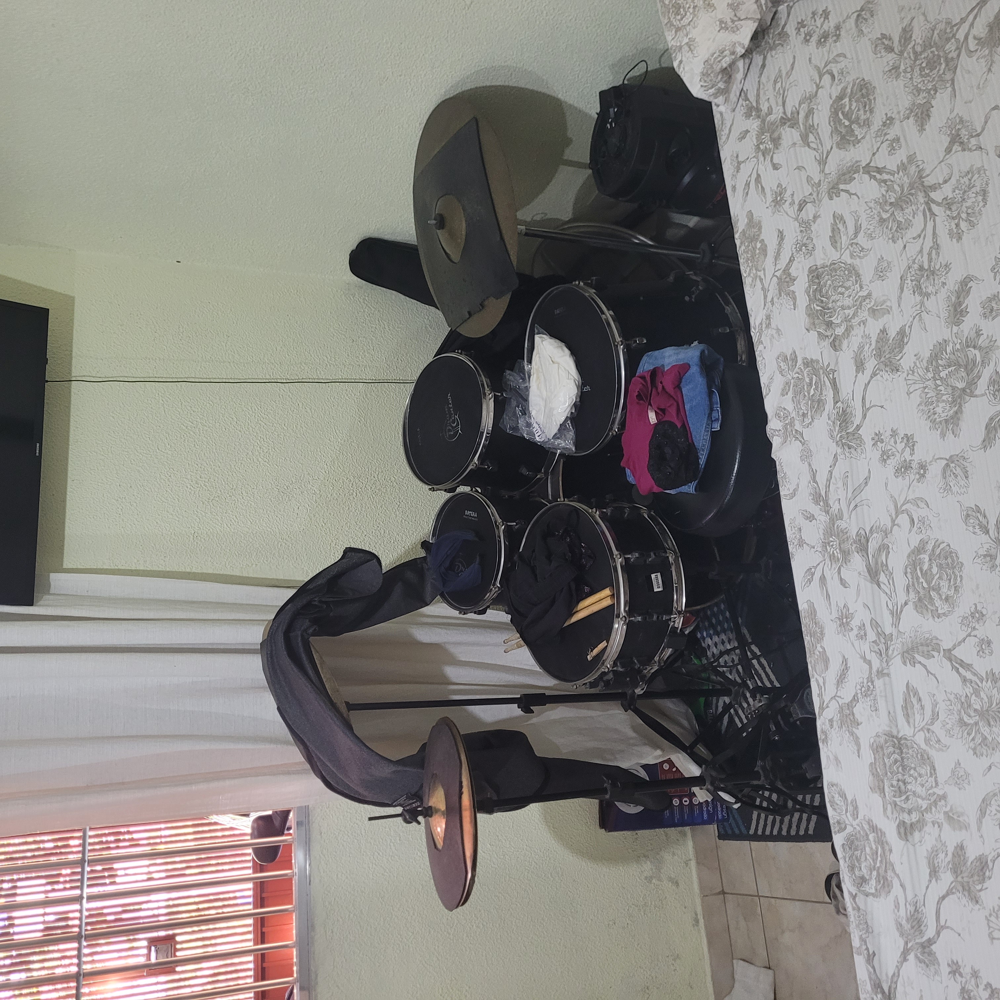

Tocar bateria é sem dúvidas o meu robbie predileto, comecei a aprender com apenas 9 anos de idade e até hoje aprendo.
Tenho uma bateria no meu quarto. Minha esposa no inicio não gostou da ideia, mais depois se acostumou com ela, tudo bem que as vezes ela acaba a usando com cabide.
